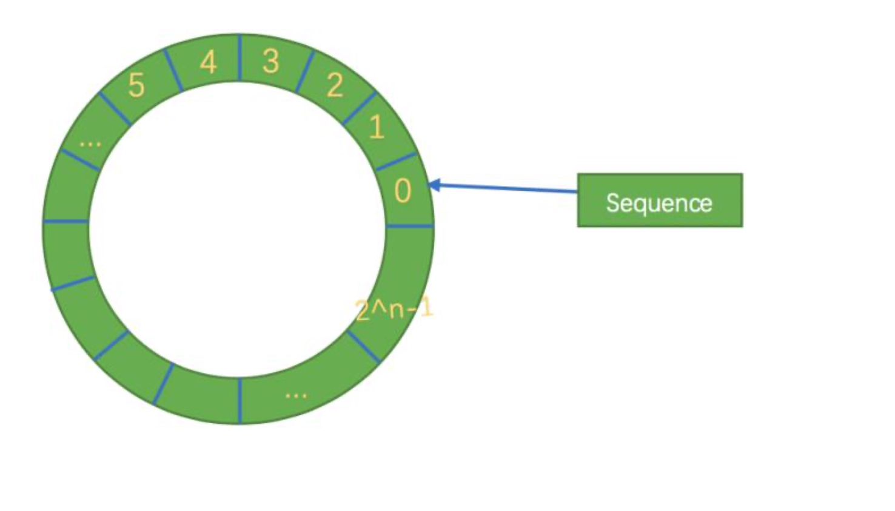

Disruptor 是英国外汇交易公司 LMAX 开发的一个高性能队列，研发的初衷是 解决内部的内存队列的延迟问题，而不是分布式队列。基于 Disruptor 开发的系 统单线程能支撑每秒 600 万订单，2010 年在 QCon 演讲后，获得了业界关注。
Disruptor 是一个高性能的线程间异步通信的框架，即在同一个 JVM 进程中 的多线程间消息传递。
传统队列问题
在 JDK 中，Java 内部的队列 BlockQueue 的各种实现，仔细分析可以得知， 队列的底层数据结构一般分成三种:数组、链表和堆，堆这里是为了实现带有优先级特性的队列暂且不考虑。
在稳定性和性能要求特别高的系统中，为了防止生产者速度过快，导致内存 溢出，只能选择有界队列;同时，为了减少 Java 的垃圾回收对系统性能的影响， 会尽量选择 Array 格式的数据结构。这样筛选下来，符合条件的队列就只有 ArrayBlockingQueue。但是 ArrayBlockingQueue 是通过加锁的方式保证线程安全， 而且 ArrayBlockingQueue 还存在伪共享问题，这两个问题严重影响了性能。
ArrayBlockingQueue 的这个伪共享问题存在于哪里呢，分析下核心的部分源 码，其中最核心的三个成员变量为：takeIndex、putIndex、count，在 ArrayBlockingQueue 的核心 enqueue 和 dequeue 方法中经常会用到的，这三 个变量很容易放到同一个缓存行中，进而产生伪共享问题。
Disruptor 的设计思想
Disruptor通过以下设计来解决队列速度慢的问题：
环形数组结构
为了避免垃圾回收，采用数组而非链表。同时，数组对处理器的缓存机制更加友好。
元素位置定位
数组长度2n，通过位运算，加快定位的速度。下标采取递增的形式。不用担心index溢出的问题。index是long类型，即使100万QPS的处理速度，也需要30万年才能用完。
无锁设计
每个生产者或者消费者线程，会先申请可以操作的元素在数组中的位置，申请到之后，直接在该位置写入或者读取数据。
高性能的原理
引入环形的数组结构: 为了避免垃圾回收，采用数组而非链表。同时，数组对处理器的缓存机制更加友好。
无锁的设计:采用 CAS 无锁方式，保证线程的安全性
属性填充:通过添加额外的无用信息，避免伪共享问题
环形数组结构是整个 Disruptor 的核心所在。

首先，因为是数组，所以要比链表快，而且根据我们对上面缓存行的解释知道， 数组中的一个元素加载，相邻的数组元素也是会被预加载的，因此在这样的结构中，cpu 无需时不时去主存加载数组中的下一个元素。而且，你可以为数组预先分配内存，使得数组对象一直存在(除非程序终止)。
这就意味着不需要花大量的时间用于垃圾回收。此外，不像链表那样，需要为每一个添加到其上面的对象创造节点对象，对应的，当删除节点时，需要执行相应的内存清理操作。环形数组中的元素采用覆盖方式，避免了 jvm 的 GC。
其次，结构作为环形，数组的大小为 2 的 n 次方，这样元素定位可以通过位运算效率会更高，这个跟一致性哈希中的环形策略有点像。在 disruptor 中，这个牛逼的环形结构就是 RingBuffer，既然是数组，那么就有大小，而且这个大小必须是2的n次方。
其实质只是一个普通的数组，只是当放置数据填充满队列(即到达 2n-1 位 置)之后，再填充数据，就会从 0 开始，覆盖之前的数据，于是就相当于一个环。
每个生产者首先通过 CAS 竞争获取可以写的空间，然后再进行慢慢往里放数据，如果正好这个时候消费者要消费数据，那么每个消费者都需要获取最大可消费的下标。
同时，Disruptor 不像传统的队列，分为一个队头指针和一个队尾指针，而是只有一个角标(上图的 seq)，它属于一个 volatile 变量，同时也是我们能够不用锁操作就能实现 Disruptor 的原因之一，而且通过缓存行补充，避免伪共享 问题。该指针是通过一直自增的方式来获取下一个可写或者可读数据。
一个生产者